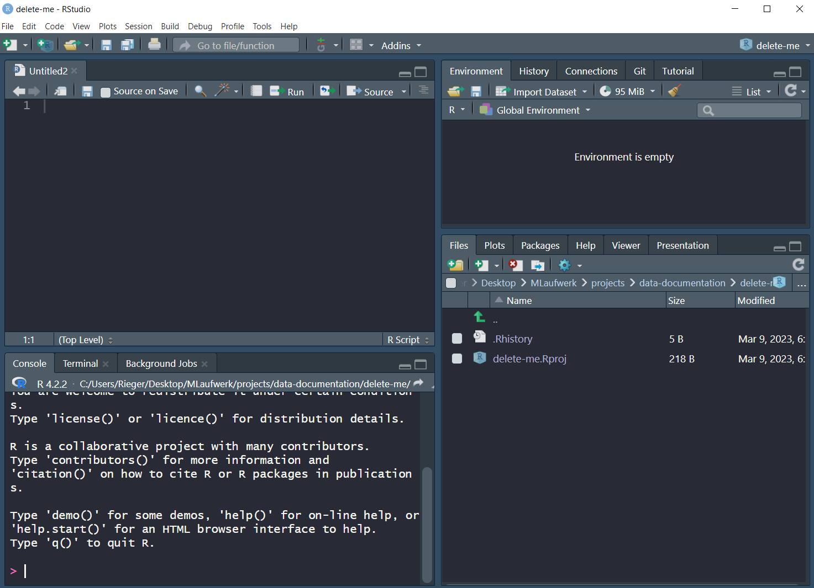
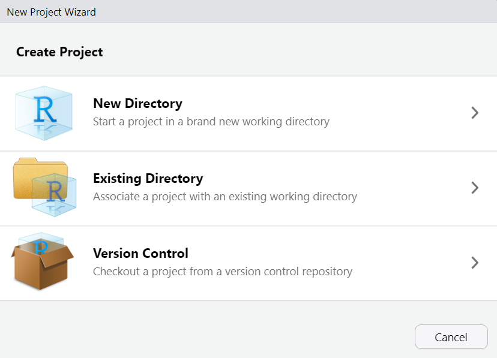
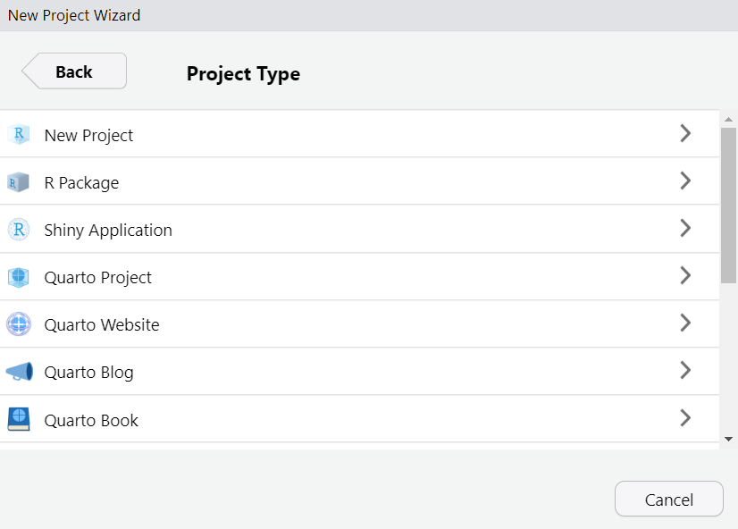
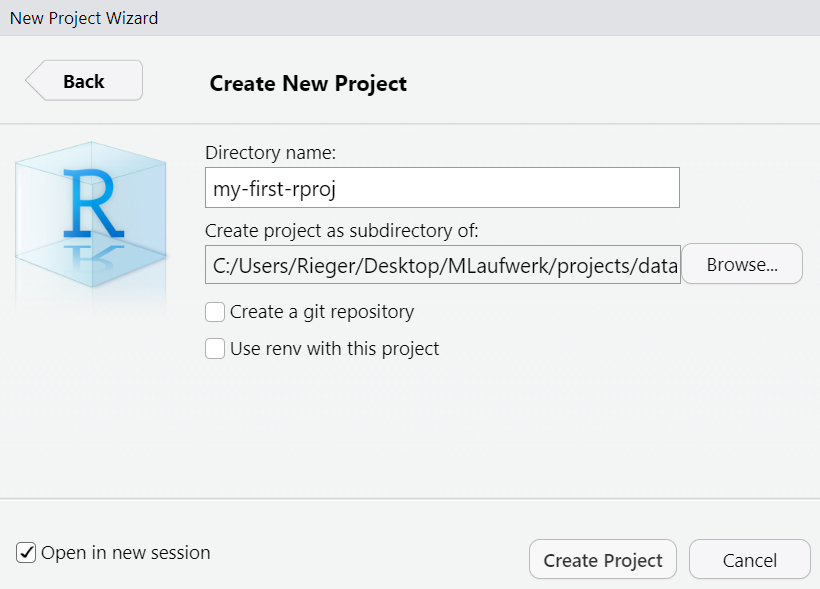
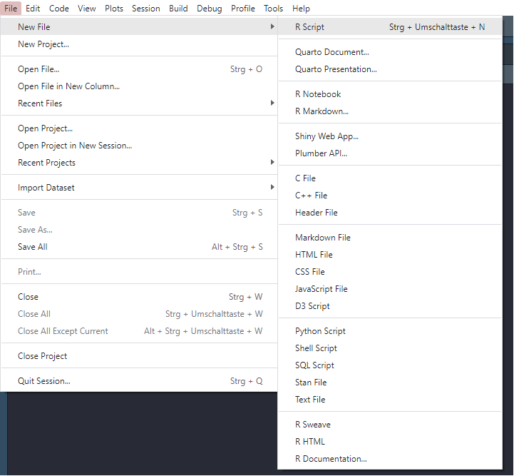

"name" == "Name"[1] FALSEThis part gives a short introduction to R and RStudio. If you are familiar with the programs and are not interested in the R vs tidyverse “distinction”, you can skip this section.
R: R is a free software environment for statistical computing and graphics. It compiles and runs on a wide variety of UNIX platforms, Windows and MacOS (see https://www.r-project.org/).
R Studio: Coding environment for R, built by Posit.
Some advertisement from the Posit website:
Used by millions of people weekly, the RStudio integrated development environment (IDE) is a set of tools built to help you be more productive with R and Python. It includes a console, syntax-highlighting editor that supports direct code execution. It also features tools for plotting, viewing history, debugging and managing your workspace.
Of course there are other IDEs (e.g., Visual Studio Code, but if you use R, RStudio is most likely the way to go.
This should look like this, maybe or probably with a different appearance (this is the Dracula theme). You can change this via Tools > Global Options > Appearance

In RStudio there are different panes1:
R
R what is: 2 + 2
You should never work directly in the Console, but always use a R-script (e.g., script.R) or even better a Quarto document (e.g., script.qmd). It is important to understand and reproduce everything you did.
?mean)It is also reasonable to use the project option. This means, whenever you start a new project (e.g., a scale-manual), create an project: File > New Project
New Directory (for today)
Existing Directory
Version Control (this is recommended, but is beyond the scope of this workshop)

R project or Quarto project)
Open in new session and click Create Project

This section gives a (very?) brief introduction to the R programming language.
…or overviews of the language see (e.g.):
R for Data Science by Hadley Wickham and Garrett Grolemund
Hands-On Programming with R by Garrett Grolemund
…
To understand computations in R, two slogans are helpful:
- Everything that exists is an object.
- Everything that happens is a function call.
– John Chambers (creator of the S programming language)
Before working with R, there are a few basics you need to know:
R is a case-sensitive programming language. This means that R distinguishes whether a word is written in upper or lower case"name" == "Name"[1] FALSE<-
a <- "Hello world!"File > New File > R Script or alternatively use the shortcut Ctrl + Shift + N

Then save the file File > Save or File > Save As. Shortcut: Ctrl + s
The basic data types2 in R are depicted in Table 1.
| Type | Description | Value (example) |
|---|---|---|
| Numeric | Numbers with decimal value or fraction | 3.7 |
| Integer | Counting numbers and their additive inverses |
2, -115
|
| Character | aka string. Letters enclosed by quotes in the output. |
"Hello World!","4"
|
| Logical | boolean |
TRUE, FALSE
|
| Factor | Categorial data - Level: characteristic value as seen by R - Label: designation of the characteristic attributes |
0, 1male,female
|
| Special |
|
NANaNNULL
|
R has a couple of different data structures3 which are briefly described in the following subsections.
c(45, 6, -83, 23, 61)
Create a vector with the c function
Or a named vector…
Count the amount of items contained in vector
Vector indexing (by position)
Slicing vectors
Generate regular sequences using seq function
list("hi", 2, NULL)
Create lists (with different elements, i.e., numbers and letters) with the list function
Create a nested list…
…or a named (nested) list
Access list or nested list elements
Unlist the list to get vector which contains all the atomic components
Count amount of items contained in list
id age sex
1 1 12 1
2 2 13 1
3 3 12 2
4 4 14 2Number of observations
Show dimension (rows, columns) of dataframe
Column names
Show the first two rows of the dataframe
Structure of dataframe object
'data.frame': 4 obs. of 3 variables:
$ id : int 1 2 3 4
$ age: num 12 13 12 14
$ sex: num 1 1 2 2Some descriptive statistics using the summary function (for more see Section Descriptive statistics and item analysis
Besides the functionality of base R (R-base?), there is the so-called tidyverse (R-tidyverse?) within R. The tidyverse is a collection of R packages (see Figure 1) that “share an underlying design philosophy, grammar, and data structures” and are (specifically) designed for data science (see https://www.tidyverse.org/).

Within the tidyverse package collection, the dplyr package (R-dplyr?) provides a set of convenient functions for manipulating data. Together with the pipe operator %>% from the magrittr package (R-magrittr?)), it is an extremely powerful approach to manipulate data in a clear and comprehensible way. The native4 R pipe |> was introduced with R v4.1.0.
The tidyverse style guide suggests using the pipe operator “to emphasize a sequence of actions”. The pipe operator can be understood as “take the object and then” pass it to the next function. In the following, the use of the base R pipe operator is shown:
exDat and then
msc1 and msc2 and then
describe function from the psych package (R-psych?) and then
kable function from the knitr package (R-knitr?)
| vars | n | mean | sd | min | max | range | se | |
|---|---|---|---|---|---|---|---|---|
| msc1 | 1 | 750 | 2.52 | 0.74 | 1 | 4 | 3 | 0.03 |
| msc2 | 2 | 680 | 2.54 | 0.72 | 1 | 4 | 3 | 0.03 |
In contrast, when we use a nested approach the code would look like this:
…or maybe a little bit more clear:
Nevertheless, when there are many functions, it gets kind of messy and difficult to comprehend. For more information on how to use pipes, see Chapter 4 of the guide.